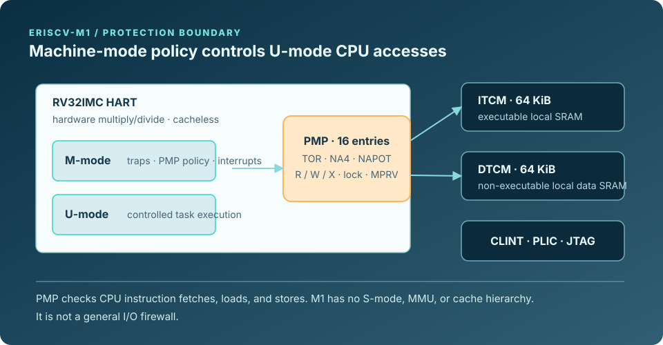
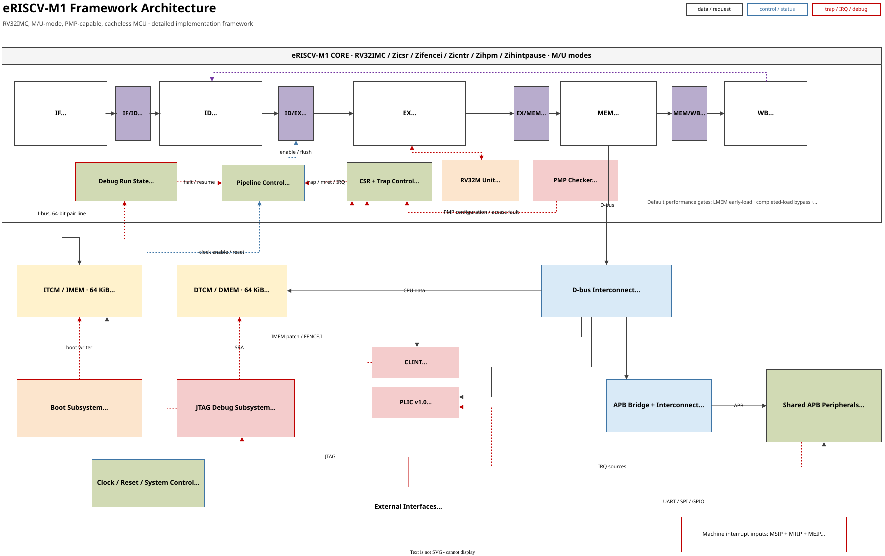

Protected firmware
Locked PMP entries can protect boot and firmware regions until reset; ordinary M-mode behavior remains defined by the PMP contract.
PRELIMINARY PRODUCT DATASHEET / M1
eRISCV-M1 extends the compact control platform with RV32M, user mode, and a 16-entry PMP contract for software-defined protection boundaries.

SECTION 01
This preliminary datasheet defines the protected RV32IMC configuration and software-defined PMP boundary. Package, electrical, maximum-frequency, ordering, and availability data are not announced.
| CPU configuration | RV32IMC with Zicsr, Zifencei, Zicntr, Zihpm, and Zihintpause; ilp32 ABI. |
|---|---|
| Privilege and protection | Machine and user modes with 16 PMP entries supporting TOR, NA4, NAPOT, R/W/X permissions, and lock behavior. |
| Local memory | 64 KiB executable ITCM and 64 KiB non-executable DTCM; directly addressed and cacheless. |
| Common services | CLINT, 32-source PLIC, Debug 1.0 Minimal JTAG DTM/DMI, and HPM3–HPM6. |
| Data movement | CPU-programmed local-memory and APB-peripheral accesses; no System SRAM or generic DMA. |

SECTION 02
Use M1 when a control system needs a defined protection boundary, hardware multiply/divide, and the M/U plus PMP model for controlled task isolation and protected firmware regions.
Locked PMP entries can protect boot and firmware regions until reset; ordinary M-mode behavior remains defined by the PMP contract.
U-mode execution, ECALL return paths, MPRV, and mcounteren provide the architectural ingredients for a controlled software boundary.
RV32M supplies hardware multiply, divide, and remainder instructions while preserving the family’s in-order trap, interrupt, and debug model.
SECTION 03
M1 adds integer compute and CPU access protection without a cache hierarchy. Protection is a software-defined PMP policy; it is not an MMU, secure-boot, or debug-lockout claim.
| Hart and execution | One in-order, little-endian RV32 hart with RV32M and RV32C. Compressed instructions are supported; IALIGN is 16 bits. |
|---|---|
| Integer arithmetic | Hardware MUL, high-half multiply, divide, and remainder instructions execute through a multi-cycle unit while preserving precise trap, interrupt, and debug behavior. |
| PMP and privilege | Sixteen PMP entries check CPU instruction fetches, loads, and stores. U-mode accesses require a matching permitted entry; locked entries can also constrain M-mode until reset. |
| Local storage | ITCM and DTCM each contain 16K × 32-bit words. The product contract accepts local-memory requests in one cycle; neither memory is cache-backed. |
| Counters | cycle, time, instret, and four programmable 64-bit HPM counters (mhpmcounter3–mhpmcounter6). |
| Not implemented | Floating point, System SRAM, generic DMA, atomics, S-mode, an MMU, caches, and XRAM. |
SECTION 04
M1 combines a compact APB peripheral set with standard RISC-V control and debug services. Peripheral register behavior and pin-level integration remain owned by the shared architecture and board documentation.
| Block | M1 scope | Interrupt path |
|---|---|---|
| UART0 | 8N1 transmit/receive with parameterized FIFOs; polling and interrupt-driven BSP use. | PLIC source 1 for the aggregated UART condition. |
| GPIO0 | Output, input, and direction registers. Pin count, pads, and muxing are board-specific and not announced. | No dedicated PLIC source. |
| TIMER0 | APB counter/compare timer. | PLIC source 2 on enabled expiry. |
| SPI0 | Byte-oriented controller with four active-low slave-select outputs. | PLIC source 3 on enabled transfer completion. |
| WDT0 | Watchdog control and pre-timeout path. | PLIC source 4 on enabled pre-timeout. |
| Platform services | CLINT, PLIC, clock/reset control, and JTAG debug. | CLINT supplies local MSIP/MTIP; PLIC supplies MEIP. |
SECTION 05
Use the published windows; XRAM and other unimplemented addresses return a bus error. This is a product-level quick reference; the complete sparse allocation and PLIC register contract remain in the shared Architecture chapter.
| Region | Address range | M1 use |
|---|---|---|
| ITCM | 0x1000_0000–0x1000_FFFF | 64 KiB executable local SRAM. |
| DTCM | 0x1100_0000–0x1100_FFFF | 64 KiB non-executable local SRAM for data and stack. |
| XRAM | 0x1200_0000–0x12FF_FFFF | Reserved and unimplemented. |
| CLINT | 0x0200_0000–0x0200_BFFF | MSIP, mtime, and mtimecmp. |
| PLIC | 0x0C00_0000–0x0C20_0FFF | One M-mode context and 32 global sources. |
| APB peripheral space | 0x4000_0000–0x40FF_FFFF | UART0, GPIO0, TIMER0, SPI0, WDT0, and clock/reset control in fixed 64 KiB slots. |
| CPU interrupt | Cause | Source |
|---|---|---|
| MSIP | 3 | CLINT software interrupt. |
| MTIP | 7 | CLINT timer interrupt. |
| MEIP | 11 | PLIC output. Sources 1–4 are UART0, TIMER0, SPI0, and WDT0; source 5 is the reserved DMA slot, 6–16 are reserved device slots, and 17–32 are synchronized external-expansion inputs. |
SECTION 06
Reset chooses a local-image or loader-controlled start; JTAG provides the external debug boundary.
rst_n is the active-low SoC reset. On release, the core starts at boot_addr_i only when fetch is enabled. SRAM contents are not reset; reset clears control and response state.
Bypass starts the existing ITCM image. JTAG/DMI and UART boot loaders write ITCM then release fetch. The SPI-flash boot mode is reserved and has no implemented boot path.
One Debug 1.0 Minimal hart is accessed through JTAG DTM/DMI. M1 retains halt/resume, abstract 32-bit GPR access, debug CSRs, single step, mcontrol/icount triggers, and 32-bit DTCM system-bus access.
The privileged boot/debug ITCM writer is provisioning logic outside the PMP contract. M1 therefore makes no secure-boot or debug-lockout claim.
No package-level clock limit, reset timing, pad electrical behavior, pinout, or board boot qualification is published. A board integration requires separate definition and qualification of those conditions.
SECTION 07
The software contract fixes RV32IMC and separates M-mode support from the controlled U-mode smoke.
| Area | M1 support boundary |
|---|---|
| Compiler contract | -march=rv32imc_zicsr_zifencei_zicntr_zihpm_zihintpause and -mabi=ilp32. |
| Freestanding BSP | Product-local startup, linker script, trap handling, PMP helpers, MMIO headers, UART, GPIO, CLINT, PLIC, timer, SPI, and watchdog programming surfaces. |
| Image model | Text remains in ITCM. Readonly/initialized data, BSS, and stack run in DTCM; readonly/initialized bytes have an ITCM load image copied by startup. The image tool emits separate ITCM and DTCM memory files. |
| RTOS collateral | FreeRTOS M-mode and Zephyr M-mode ports are development/simulation profiles. The FreeRTOS U-mode smoke exercises four static task contexts, PMP templates, and ECALL paths; it is not a production RTOS or security certification claim. |
| Workloads | CoreMark, Embench-IoT selections, Dhrystone, and microbenchmarks are engineering collateral; they do not establish a guaranteed performance specification. |
SECTION 08
Protection is explicit software policy.
Sixteen entries support TOR, NA4, and NAPOT regions with R/W/X permissions and lock behavior. U-mode accesses require a matching permitted entry.
M-mode owns exception handling, interrupt control, PMP programming, and lower-privilege counter authorization. M1 does not implement supervisor mode or address translation.
The M1 64 KiB ITCM and 64 KiB DTCM remain directly addressed and cacheless. IMEM updates require the documented fence.i sequence.
CLINT, the one-context 32-source PLIC, Debug 1.0 Minimal JTAG, and HPM3–HPM6 preserve the M0 software vocabulary.
SECTION 09
M1 does not provide floating point, System SRAM, generic DMA, atomics, S-mode, an MMU, cache mechanisms, flash/XIP, or production boot/image format definition.
The supplied U-mode FreeRTOS collateral is a controlled development smoke, not a production RTOS certification, security, package, electrical, or availability claim.
SECTION 10
The Architecture chapter owns the ISA/ABI declaration, address map, and PLIC allocation. See Software for toolchain and BSP use, Verification for evidence boundaries, and FPGA evaluation for implementation context.